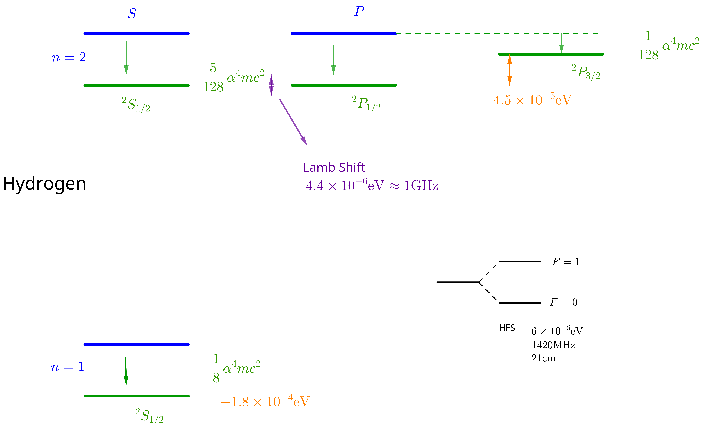

Information
- 官方介绍: https://ocw.mit.edu/courses/physics/8-421-atomic-and-optical-physics-i-spring-2014/
- 视频列表地址: https://www.youtube.com/playlist?list=PLUl4u3cNGP62FPGcyFJkzhqq9c5cHCK32
Helium (last lecture)
$$\begin{align} \vec{S} = \vec{S}(1) + \vec{S}(2) \end{align}$$All spin operators are symmetric against particle exchange. In other words, if you couple to the spin through a magnetic field, you couple to the two electrons symmetrically. And therefore, you have the selection rule only symmetric and symmetric ( $S \leftrightarrow S$ ) & anti-symmetric and anti-symmetric ( $A \leftrightarrow A$ ) states couple. 也就是说 Hamiltonian 中的自旋算符不改变自旋的组态.
Spatial and spin symmetry (S. A) are both good quantum numbers. Formally, all observables $\hat{O}$ commute with particle exchange operator (自旋和空间没有耦 合)
$$\begin{align} [P_{ij}, \hat{O}] = 0 \end{align}$$As long as wavefunctions and operators separate into spin-dependent and space-dependent parts
$$\begin{align} P_{12} = P_{12}^{\mathrm{space}} P_{12}^{\mathrm{spin}} \end{align}$$and both $P_{12}$ 's are conserved.
Singlets $\leftrightarrow$ Triplets transition requires violation of above assumption.
Mixing of spin and spatial WF by spin orbit coupling. Spin-orbital coupling $\propto Z^4$ . Weak for Helium, $2^{3}s$ is VERY long lived 8000s (It's one of the most longest-lived metastable states you can imagine and which you find in atomic physics) Ne, Ar, Kr, Xe 40s.(longer, because of stronger nuclear charge) Mg, Ca, Sr have inter-combination lines, are candidate for atomic clocks (kHz line width). If the line width is kilohertz, the lifetime is millisecond ...
Decay path: 1 photon M1(we discuss it later in the course), and not 2-photons as believed earlier). The decay path requires higher order terms using the Dirac equation with coupling to the electromagnetic field.
Fine Structure
| Electronic energy | Ryd, $\alpha^2 mc^2$ | ||
| Fine structure | $\alpha^4 mc^2$ , $\alpha^2$ Ryd | ||
| Lamb shifts | $\alpha^5 mc^2$ , GHz |
Fine structure: $\alpha^4 mc^2$ . Exact picture: Dirac equation. The solution of the Dirac equation for the hydrogen atom gives us the electronic structure, the same as comes out of the Bohr model, but now including the fine structure.
Fine Structure: 3 contributions
- kinetic
- spin-orbit
- Darwin term
Pauli approximation to the Dirac equation (expand Dirac equation in power of $v/c$ , lowest order):
$$\begin{align} H =& mc^{2} + \frac{p^2}{2m} - \frac{e^2}{r} \\ & - \frac{p^4}{8m^3c^2}\quad \mathrm{kinetic} \\ & + \frac{\hbar^2e^2}{2m^2 c^2}\frac{1}{r^3} \vec{L}\cdot \vec{S} \quad \mathrm{spin-orbit}\\ & - \frac{\hbar^2}{8 m^2c^2}\nabla^2 \frac{e^2}{r} \quad \mathrm{Darwin} \end{align}$$Kinetic energy
$$\begin{align} E = \sqrt{(mc^2)^2 + (pc)^2} \end{align}$$ $$\begin{align} T = E - mc^2 \approx \frac{p^2}{2m} - \frac{1}{8}\frac{p^4}{m^3c^2} \end{align}$$Spin-orbit interaction
insightful: what do we have to add to the Schrodinger equation to get it? Spin!
$e^-$
- intrinsic angular moment $\hbar \vec{S}$
- magnetic moment $\mu = g\mu_0 \vec{S}$ ( $g = 2$ , $\mu_0$ Bohr magneton)
moving electron "sees" motional magnetic field.
$$\begin{align} B_{\mathrm{mot}} = - \frac{\vec{v}}{c}\times \vec{E} = - \frac{\vec{v}}{c}\times \frac{e}{r^3}\vec{r} = \frac{e\hbar}{mc} \frac{1}{r^3}\vec{L} \end{align}$$ $$\begin{align} H_{\mathrm{S.O.}} = - \vec{\mu}\cdot \vec{B} = \frac{e^2 \hbar^2}{m^2 c^2}\frac{1}{r^3}\vec{S}\cdot \vec{L} \end{align}$$relativistic transformations \begin{align} \vec{\Omega}_{\mathrm{T}} = \frac{1}{2}\frac{\vec{a}\times \vec{v}}{c^2} \quad \begin{pmatrix} = 0, \quad \vec{a} // \vec{v} \\ \mathrm{Thomas}\, \mathrm{procession} \end{pmatrix} \end{align} according to Lecture 2 \begin{align} \vec{B}_{\mathrm{T}} = \frac{1}{\gamma_e}\vec{\Omega}_{\mathrm{T}}, \gamma_e = \frac{e}{mc}, \vec{a} = \frac{e^2}{mr^3}\vec{r} \end{align} \begin{align} \Rightarrow B_{\mathrm{T}} = \frac{1}{2}B_{\mathrm{mot}} \end{align} 杨福家碱金属双线一节, 及 Griffiths QM 6.3 节有关于坐标系变换的讨论.
Darwin term
electron is "smeared(not localized) out" over Compton wavelength $\frac{\hbar}{mc}$
German word: Zitterbewegung (trembling motion)
fells averaged Coulomb potential $\bar{V(r)}$
small displacement $\vec{s}$
$$\begin{align} V(\vec{r} + \vec{s}) = v(\vec{r}) + \vec{\nabla} V\cdot \vec{s} + \frac{1}{2} \sum_{ij} s_{xi}s_{xj} \frac{\partial^2 V}{\partial x_i \partial x_j} \end{align}$$the correction:
$$\begin{align} \Delta V = \frac{1}{2}\frac{1}{3}\left(\frac{\hbar}{mc}\right)^2 \nabla^2V = - \frac{1}{6} \frac{e^2\hbar^2}{m^2c^2}\nabla^2 \frac{1}{r} \end{align}$$$\nabla^2\frac{1}{r} \Rightarrow$ only s electrons which have a non-vanishing probability to feel the origin of the Coulomb potential. Exact coefficition is $\frac{1}{8}$ .
summary
| s electrons | $l\neq 0$ | sign | |||
| rel KE | Yes | Yes | $-$ | ||
| $\vec{L}\cdot \vec{S}$ | No | Yes | $+/-$ | ||
| Darwin | Yes | No | $+$ |
the Darwin term reduces the binding energy, because it sort of takes a cusp (a point of transition between two different states) away from the Coulomb interaction.
Spin-orbit is not diagonal in $\vec{L}, \vec{S}$ . So what we have to do is we have to introduce now:
$$\begin{align} (\vec{L} + \vec{S})^2 = \vec{J}^{2} \end{align}$$ $$\begin{align} \vec{L}\cdot \vec{S} = \frac{1}{2}(\vec{J}^2 - \vec{L}^2 - \vec{S}^2) \end{align}$$So, therefore, the LS interaction is diagonal in the J basis.
加上 Kinetic 和 Darwin 项之后, $^2S_{1/2}, ^2P_{1/2}$ 又重新简并. If we would use a non-relativistic approach, and derive the Darwin term, the spin orbit term, and the relativistic correction separately, there would be no reason. It would just look like a freak(a thing, person, animal, or event that is extremely unusual or unlikely, and not like any other…) accident in nature that those two levels come out equal. However, it's not a freak accident. *It's a symmetry of the Dirac equation.* So all those corrections have a deep connection in relativistic physics. And relativistic physics preserves the degeneracy in $J$ .
Fine structure does not lift the degeneracy between $^2S_{1/2}$ and $^2P_{1/2}$ . When we use the Dirac equation, we can get an exact expression for the fine structure:
$$\begin{align} E_{\mathrm{F.S.}} = \alpha^2 mc^2 \left(-\frac{\alpha^2}{2n^4}\right) \left(\frac{n}{j+\frac{1}{2}} - \frac{3}{4} \right) \end{align}$$and then the fine structure only depends on $J$ , and not on $L, S$ separately . So that tells us that eventually the spin of the electron and the fine structure really have deep origins in the relativistic nature of the underlying physics.
但这个简并只对单电子的系统有效. 见 Demtröder, W. Atoms, Molecules and Photons: An Introduction to Atomic-, Molecular- and Quantum Physics. (Springer Berlin Heidelberg, 2018) 第 167, 168 页 5.5.4 Spin-Orbit Coupling and Fine Structure.

So that means at the level of $10^{-4}$ eV, we understand atomic structure. But we want to go further. And the next thing we want to discuss is that --- what is the exact degeneracy between $^2S_{1/2}$ and $^2P_{1/2}$ which is actually lifted when we introduce photons when we allow the electrons to couple to the electromagnetic field, that's QED. And that introduces the Lamb shift (the nucleus is a point charge, has no structure).
When we bring in the proton. So far we have said there is a point charge, but the proton is a particle which has finite size. But also, it has finite angular momentum. And then we have HFS.

Lamb Shift (QED)
The discovery of this lifting of the degeneracy actually opened up the field for the development of quantum electrodynamics.
If you fully quantize the electromagnetic field, you have a vector potential which describes the vacuum mode. And you have a vector potential, which is the operator of the fully-quantized field. And if you now carry out second-order perturbation theory in this operator $A$ of the quantized electromagnetic field. In other words, you allow the atom or the electron in the atom to couple to all the empty modes of the vacuum. Then you obtain the Lamb shift in its full beauty.
The nature of the Lamb shift is the coupling to the vacuum modes. But I want to capture that now in a semi-classical picture.
Simple picture due to Welton & Weisskopf
the vacuum is filled with a zero point energy of the electromagnetic field.
EM modes have zero point energy $\frac{1}{2}\hbar\omega$ density of modes (per volume and frequency interval)
Now in addition to its own trembling motion, the electron is now shaken by the electric field of vacuum. And this leads to an additional smear out. This is the Lamb shift.$$\begin{align} \rho(\nu) \mathrm{d}\nu = 8\pi \frac{\nu^2}{c^3}\mathrm{d}\nu \end{align}$$
zero point density
$$\begin{align} W_0 = \frac{1}{2}h\nu \rho(\nu) = 4\pi\frac{h\nu^3}{c^3} = \frac{1}{8\pi} E_{\nu^2} \end{align}$$So therefore, what we derive from this picture, that the vacuum is filled with an oscillating electric field. And this oscillating electric field is characterized by a value, by a spectral density
$$\begin{align} E_{\nu}^2 = \frac{32\pi^2 h\nu^3}{c^3} \end{align}$$What is the effect of such a field on a free electron? And we will later discuss that for very high-frequencies, an electron can be regarded as free.
$$\begin{align} m \ddot{s_{\nu}} =& e E_{\nu} \cos (2\pi\nu t) \\ \Rightarrow s_{\nu} =& \frac{e E_{\nu}}{2\pi \nu^2 m}(- \cos(2\pi\nu t)) \end{align}$$where $s$ is coordinate of electron.
Of course, the phase is random, so we're not interested in the amplitude . We are interested in sort of an average amplitude square or an RMS amplitude.
$$\begin{align} \bar{S_{\nu}^2} = \frac{e^2}{32\pi^4m^2\nu^4}E_{\nu}^2 = \frac{c^2h}{\pi^2 m^2 e^3}\frac{1}{\nu} \end{align}$$like Darwin term
$$\begin{align} \Delta V = \frac{s_{\nu}^2}{6} \nabla^2 V(r) = \frac{s_{\nu}^2}{6} \cdot 4\pi z\delta(r) \end{align}$$These smear out ( $s_{\nu}^2$ ) of the electron leads to a change of the average Coulomb potential. And that means now that we get a change of the binding energy of the electron, which is nothing else in perturbation theory than the matrix element of the perturbation operator
$$\begin{align} \delta W_{\nu} = \frac{2\pi}{3} e^2 s_{\nu}^2 \langle \psi | \delta(r) | \psi\rangle \end{align}$$$\langle \psi | \delta(r) | \psi\rangle$ only affects s electron $\frac{Z^3}{\pi n^3a_0^3}$
integrate over $\nu$
$$\begin{align} \delta W = \frac{4}{3\pi}\alpha^3 \frac{Z^4}{n^e} \mathrm{ln} \left[ \frac{\nu_{\mathrm{max}}}{\nu_{\mathrm{min}}} \right] \end{align}$$we have divergences at both ends. So we need a cutoff at a minimum and at a maximum frequency. $\nu_{\mathrm{max}} \approx mc^2$ , $\nu_{\mathrm{min}} =$ frequency of the orbital electron
$$\begin{align} \frac{Z^2}{n^3} 2 \mathrm{Ryd.} \end{align}$$so
$$\begin{align} \frac{\nu_{\mathrm{max}}}{\nu_{\mathrm{min}}} \approx \frac{n^3}{Z^2\alpha^{2}} \end{align}$$if we apply it to 2s state which is most important because there is the degeneracy between $^2S_{1/2}$ and $^2P_{1/2}$ to be lifted, we get a result that the energy splitting is now
$$\begin{align} \delta W = \frac{1}{6\pi}\alpha^3 \mathrm{ln}\frac{8}{\alpha^2}\approx 1600 \mathrm{MHz} \end{align}$$exact value is 1058 MHz.
Reference
- S. S. Hodgman, R. G. Dall, L. J. Byron, K. G. H. Baldwin, S. J. Buckman, and A. G. Truscott Phys. Rev. Lett. 103, 053002 – Published 30 July 2009
- Phys. Rev. Lett. 100, 023001 – Published 15 January 2008, Experimental Determination of the Helium $2^3P_1–1^1S_0$ Transition Rate
- Wikipedia: Zitterbewegung
- Wikipedia: Welton
- Wikipedia: Weisskopf
- Demtröder, W. Atoms, Molecules and Photons: An Introduction to Atomic-, Molecular- and Quantum Physics. (Springer Berlin Heidelberg, 2018)
- wikipedia: Fine structure